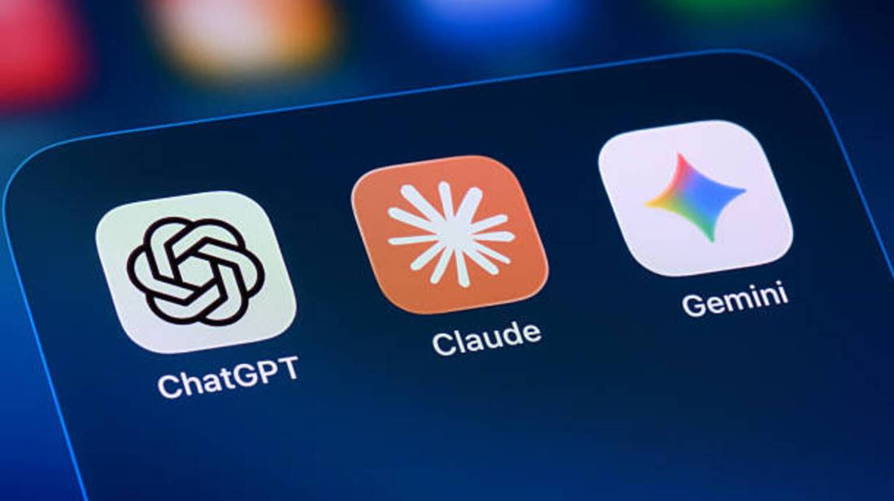

OpenAI Q3 Revenue Tops $10B, Up 50%, as Anthropic Posts Nearly $17B
OpenAI's third-quarter revenue hit about $10 billion, up roughly 50% from the prior quarter, The Information reported on November 10, driven by API demand for GPT-5.6 and Astra plus advertising. The annualized run rate reached about $50 billion at the end of September. Anthropic still did better, at nearly $17 billion in the same quarter. The Wall Street Journal, citing documents viewed by the publication, reported operating losses widened to $10.9 billion from $10.1 billion, though the adjusted operating margin improved to -109% from -150%.

- 01THE PRINT — OpenAI's third-quarter revenue reached about $10 billion, up roughly 50% from the prior quarter, The Information reported on November 10, 2026, disclosed to investors at a meeting and driven by API demand for GPT-5.6 and Astra plus growing ad sales.
- 02THE MIX — More than half of revenue now comes from enterprise clients, annualized revenue grew 70% quarter over quarter, and the run rate reached about $50 billion at the end of September, expected to pass $70 billion by year end. Enterprise revenue doubled quarter over quarter, per CFO Sarah Friar on CNBC, and revenue is now split roughly equally between enterprise and consumer.
- 03THE WATCHPOINT — The loss print is now in: operating losses widened to $10.9 billion even as the adjusted operating margin improved to -109% from -150%. The next checkpoint is whether that margin keeps improving as the run rate heads past $70 billion by year end.
WHAT HAPPENEDWhat Happened
OpenAI brought in about $10 billion of revenue in the third quarter of 2026, up roughly 50% from the prior quarter, The Information reported on November 10, citing people familiar with the matter. The figure was disclosed to investors at a meeting on Tuesday. The growth was driven mainly by demand for OpenAI's application programming interfaces, led by newer models including GPT-5.6 and Astra, plus growing advertising sales.
The customer mix kept shifting toward business. More than half of OpenAI's revenue now comes from enterprise clients, co-founder Greg Brockman said, and annualized revenue grew 70% quarter over quarter in the third quarter. The company was running at an annualized rate of about $50 billion at the end of September, up from about $20 billion at the start of the year, with the rate expected to push past $70 billion by year end. Chief Financial Officer Sarah Friar told CNBC's Deirdre Bosa that enterprise revenue doubled quarter over quarter, and revenue is now split roughly equally between enterprise and consumer; small and mid-sized business growth was the strongest in six quarters, with the enterprise agent product Dots among the drivers.
Rival Anthropic still did better on the quarter. Anthropic took in nearly $17 billion in the same three months, The Information reported, a figure consistent with its amended S-1 showing $16.96 billion. The gap is partly accounting: Anthropic counts the full value of sales made through cloud partners as revenue, while OpenAI records only its share. Microsoft, meanwhile, generated $10 billion from its OpenAI-linked commercial engagements in the fiscal quarter ended September 30, about 11% of its $92.3 billion in total quarterly revenue.
The revenue print came with a loss print. The Wall Street Journal, citing documents viewed by the publication, reported OpenAI's operating losses widened to $10.9 billion in the quarter from $10.1 billion in the prior quarter, while the adjusted operating margin improved to -109% from -150%. Reuters reported the Journal's findings on November 10, and Dow Jones headlined the same heavy-loss picture, so the loss side of the quarter is now on the record alongside the $10 billion top line.
WHY IT MATTERSGrowth is back, and it is enterprise-led
The 50% sequential jump ends a stretch of slowing growth. Brockman said earlier in November that growth slowed in the first half of 2026 and picked up after the June launch of GPT-5.6, and the third-quarter print is the first hard number behind that claim. The drivers matter as much as the total: API demand for new models and advertising, with enterprise customers now supplying more than half of revenue, is a more durable mix than consumer subscriptions alone.
The run-rate math frames the fundraise. OpenAI has raised $11 billion at a $1.25 trillion valuation in the first close of a round cut to $20 billion from $30 billion, and a $50 billion run rate exiting September, heading for $70 billion by year end, is the number investors are underwriting. The October confusion over the run rate, when a $70 billion figure circulated before OpenAI clarified the net number near $50 billion, makes the clean $10 billion quarterly print the anchor the market will actually use.
WHY IT MATTERSAnthropic is ahead on revenue, and the accounting gap cuts both ways
Anthropic's nearly $17 billion quarter puts it ahead of OpenAI on quarterly revenue for the first time, but the comparison is not like for like. Anthropic books the full value of sales through cloud partners; OpenAI books only its share. On a matched basis the gap narrows, and both companies are now printing revenue at a scale that would have seemed implausible a year ago, $10 billion and $17 billion in a single quarter from two private labs.
The race is now about who converts revenue into durable margin. Anthropic's amended S-1 shows compute swallowing 58% of its third-quarter revenue, and OpenAI's own costs are famously larger still. Revenue growth of 50% a quarter buys both labs time with investors, but the next checkpoint is whether either can show the cost curve bending, not just the top line rising.
SIGNAL JUDGMENT — ANALYSISThe growth story is real. The comparison needs the footnote
Tokenta Signal's judgment: A 50% sequential jump to $10 billion, led by APIs and enterprise customers, is the cleanest evidence yet that OpenAI's second-half acceleration is real, and it gives the $1.25 trillion valuation a revenue line to stand on. But the headline rivalry needs its footnote: Anthropic's $17 billion counts cloud-partner sales in full, OpenAI's $10 billion does not, so the gap overstates the difference. The number that decides the next chapter is not revenue but cost, and neither lab has shown that curve bending yet.
WHAT REMAINS UNCERTAINWhat Remains Uncertain
EVIDENCEEvidence
Seeking Alpha's report, read in full: OpenAI's revenue surpassed $10 billion in the third quarter, The Information reported on Tuesday. The sales figure, which increased around 50%, was disclosed to investors at a meeting, the news outlet added, citing people familiar with the matter. OpenAI did not immediately respond to a request for comment from Seeking Alpha.
PRIMARY SOURCESPrimary Sources
- The Information: OpenAI Revenue Jumps to $10 Billion in Third Quarter
https://www.theinformation.com/articles/openai-revenue-jumps-10-billion-third-quarter - Seeking Alpha: OpenAI revenue tops $10B in Q3: report
https://seekingalpha.com/news/4670166-openai-revenue-tops-10b-in-q3-report - Crypto Briefing: OpenAI revenue hits $10 billion in Q3 as enterprise demand surges
https://cryptobriefing.com/openai-revenue-hits-10-billion-q3/ - PANews: OpenAI's Q3 Revenue at About $10 Billion, Up Roughly 50%
https://www.panews.io/articles/01a1c75a-51cb-73f5-910d-2a7c9f1b6a26 - Reuters (via SRN News): OpenAI posts steep losses even as quarterly revenue rises to $10 billion, WSJ reports
https://srnnews.com/openai-posts-steep-losses-even-as-quarterly-revenue-rises-to-10-billion-wsj-reports/ - Storyboard18: OpenAI's enterprise revenue doubles as Q3 revenue surges 50% to $10 billion
https://www.storyboard18.com/brand-marketing/openai-posts-10b-revenue-in-q3-with-10-9b-operating-loss-ws-l-114468.htm